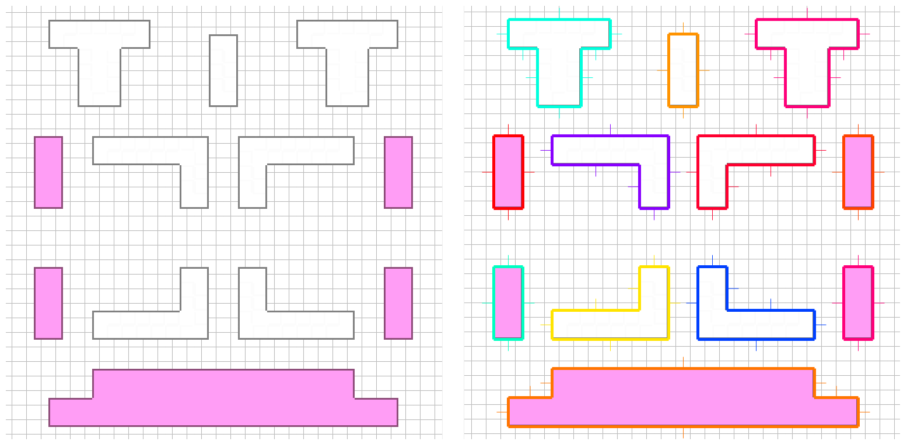

Hulls from Tilemaps in Phaser
A module for use with Phaser for reducing neighboring tiles in a tilemap into a single shape - a polygon "hull". For example, the demo tilemap (left) is converted into a series of hulls (right, each hull is visualized in a random color). The hulls contain information about the edges - including midpoints, normals and line lengths. See src/example/js/states/start.js for example usage.
This was built to find hulls for casting dynamic shadows in a 2D lighting engine, but the hull calculation might be useful for simplifying things like collision detection.

Usages
Whether you include the library as a script tag or import it as a module, Phaser is a dependency. The library expects Phaser to be in the global scope.
As a Script
Download the dist/phaser-tiled-hull.min.js here and include it in your HTML:
<script src="dist/phaser-tiled-hull.min.js><script>Inside of your own script, you can now use the global phaserTiledHull:
phaserTiledHull(...)See src/example/js/states/start.js for example usage in global mode.
As a Module
Install the dependency:
npm install --save phaser-tiled-hullTo use the babelified and minified library:
import phaserTiledHull from "phaser-tiled-hull";
phaserTiledHull(...)To use the raw es6 library (so you can transpile it to match your own project settings):
import phaserTiledHull from "phaser-tiled-hull/src/library";
phaserTiledHull(...)To Do
- Add detailed usage snippets
- Publish to npm
- Generate jsdocs
- Add Phaser as an external dependency so that it doesn't have to be on the global. Relevant mostly for when Phaser v3 is released.
- hull.js can't handle 1x tile concave gaps. Submit PR to hull.js to fix that. For example:
Tilemap: Hull:
X X X X X X
X ⟶ X X
X X X X X XBuilding the Source Files
See the scripts section of package.json. Main commands:
npm run build:all ⟶ Builds & minifies the library & example
npm run dev ⟶ Builds the library & example and serves it via browser-syncDirectory structure:
├── src/
├── example/ ES6 example of how to use the library
└── phaser-tiled-hull/ ES6 source for the library
├── public/ The babel transpiled example code
└── dist/ The transpiled library and source maps
├── phaser-tiled-hull.js Transpiled
└── phaser-tiled-hull.minjs Transpiled and minifiedContributors
@mikewesthad, @retwedt